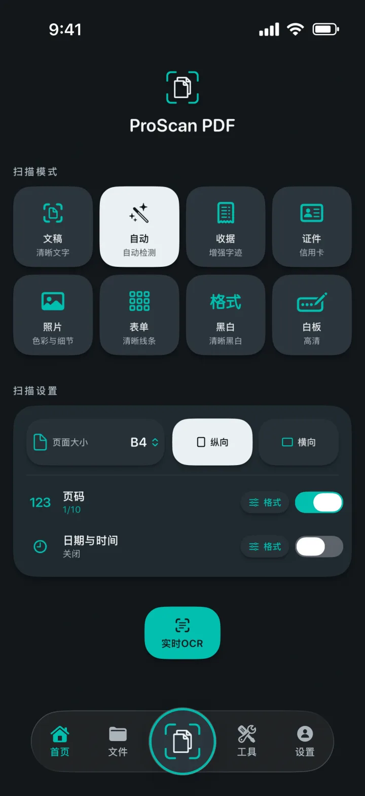
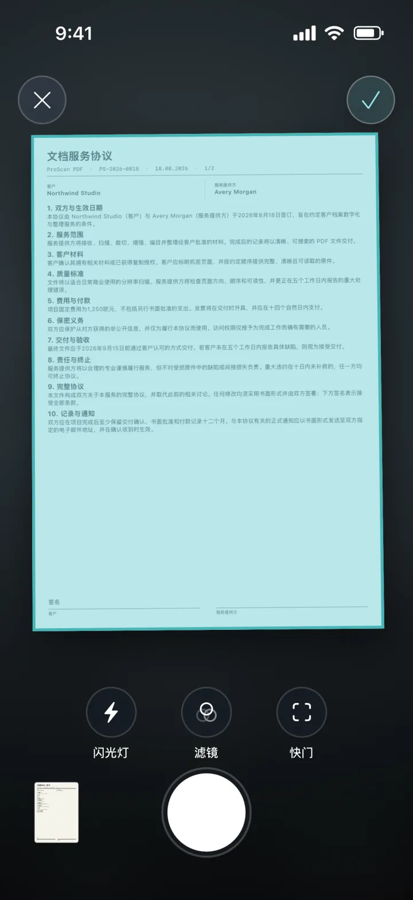
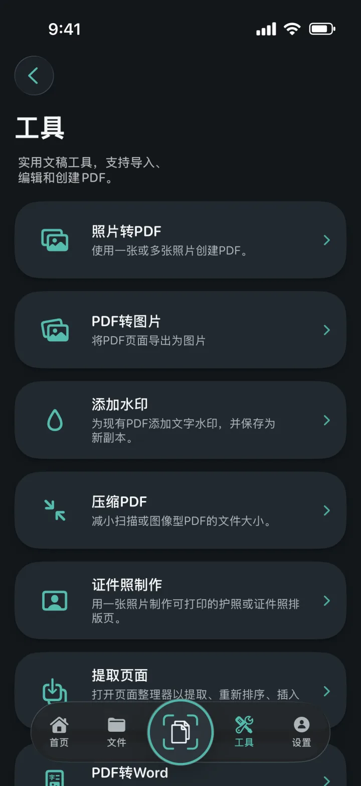
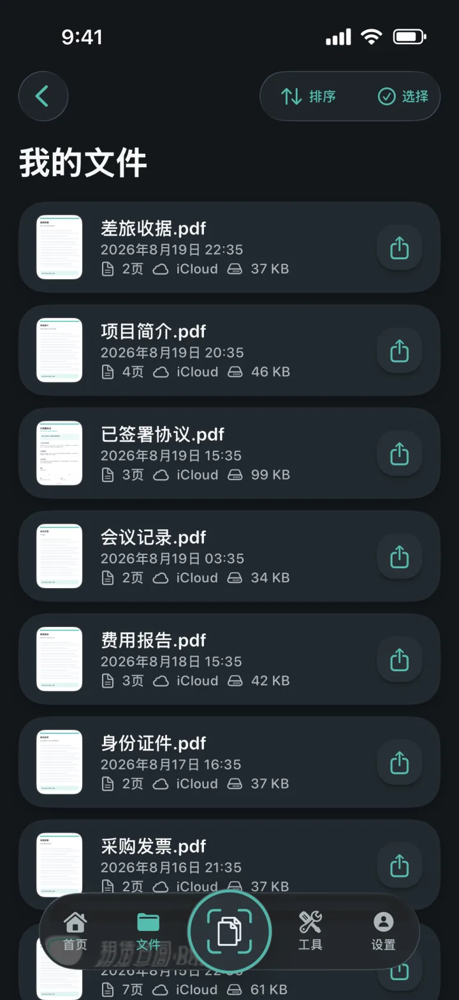
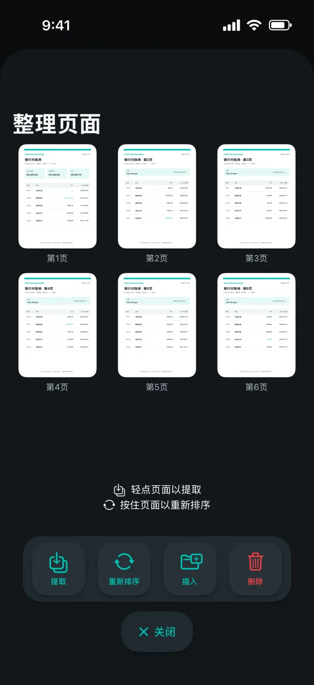
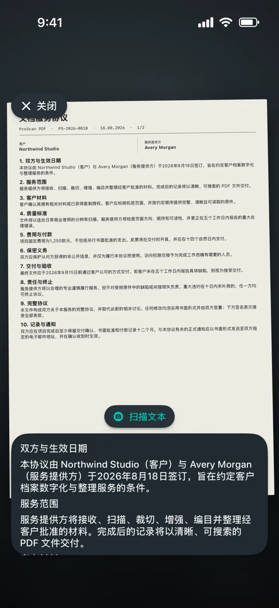

照片转PDF
将一张或多张照片制作成整洁的PDF。
懂得每一页的扫描工具
将文档、收据、证件、笔记和照片变成整洁的PDF。随后可继续编辑、签名、保护和共享，全程无广告、无水印。

懂得每一页的扫描工具
选择合适的模式，将页面放入取景框，然后交给Apple文档扫描器完成拍摄。开始前可设置页面大小、方向、页码以及日期和时间。

PDF工具一应俱全
在一个简洁的工作空间中导入、转换、编辑和创建PDF。

将一张或多张照片制作成整洁的PDF。
将每个PDF页面导出为图片，然后保存或共享。
为新的PDF副本添加彩色文字水印。
缩小扫描件和图片型PDF的文件大小。
裁剪、检查并导出精确尺寸或可打印排版。
提取、重排、插入或删除PDF页面。
创建可编辑的Word文件，并尽可能保留原有排版。
创建可搜索副本，并在阅读器中查找文字。


文档始终井然有序
本地副本让文件库快速打开。私人iCloud备份可帮助你在更换其他Apple设备后继续访问文档。
OCR与可搜索文档
实时捕捉文字，从扫描件中提取可编辑内容，或创建可搜索的PDF副本。所有处理都在iPhone或iPad上完成。

为你而设计
每款主题都会改变应用界面，并提供配套的主屏幕图标。
石墨底色上的扫描青与纸张白。
深黑底色上的电光青与紫色。
浅色纸面上的清爽蓝色控件。
柔和炭黑上的珊瑚色、紫色与薄荷色。
精致午夜蓝上的香槟色与柔粉色。
石墨底色上的冷银与亮金。
深森林绿上的暖奶油与陶土色。
支持英语、德语、西班牙语、法语、意大利语、荷兰语、波兰语、巴西葡萄牙语、欧洲葡萄牙语、土耳其语、简体中文、日语、韩语和印地语。
常见问题解答
清楚了解隐私、存储方式以及ProScan PDF可以完成的操作。
不会。ProScan PDF不在应用中显示广告，也不会给扫描文档添加水印。
核心扫描、OCR和PDF工具都在设备上运行，并支持离线使用。iCloud备份和共享需要网络连接。
文档保存在应用的本地文件库中，便于快速访问。iCloud可用时，私人备份副本可存储在你的iCloud账户中。
照片转PDF、PDF转图片、水印、压缩、证件照制作、页面提取与整理、PDF转Word、可搜索PDF、合并、签名和密码保护。
每天可免费扫描三次。升级Pro后可无限扫描并使用全部Pro工具。

下一份文档，一触即得
无广告。无水印。